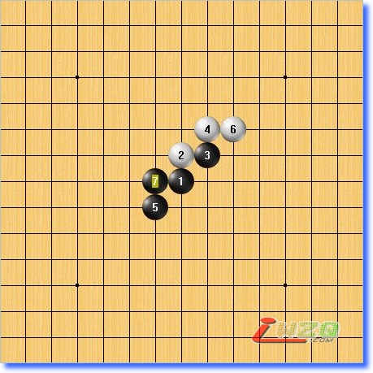

五子剑系列讲座之四【五子棋初级花月】
#1 五子剑系列讲座之四【五子棋初级花月】 作者：有志青年 发表时间：2007-12-10 12:19:26
注：五子剑五子棋系列讲座教程出自掌棋盟论坛，版权归原作者本人及掌棋盟论坛所有，未经许可，请勿私自转载。爱五子棋网站已获授权。
下棋这几年，飘飘零零的真正踏实在下棋的时间并不多，利用空闲的几天写下个人的一些经
验，希望可以对棋友有所帮助！
我认为下棋最重要的是态度和方法，你对五子棋的热爱程度以及学棋时所用的方法是提高
的关键！
阅读的顺序为：
五子棋初级→五子棋初级花月→五子棋初级蒲月→五子棋初级习题→
五子棋中级→五子棋中级云雨月→五子棋中级寒星→五子棋中级银月→五子棋中级习题→
五子棋ＶＣＦ习题集→五子棋高级
所有截图画面是ＬＩＢ、五子妙手３.０、ＱＱ游戏五子棋单机版能有如此多的人爱好
五子棋是最令人高兴的事，如此多的人为了同一种游戏来交流甚至痴迷！
感谢所有下五子棋的朋友，祝大家笑口常开、一生平安！
棋友：五子剑
#2 Re:五子剑系列讲座之【五子棋初级花月】 作者：有志青年 发表时间：2007-12-10 12:19:52
现在我们一起来看看初级阶段的开局知识，尽管ＲＩＦ职业规则规定了黑棋禁止使用３３，４４，长连等战术，然而黑棋在一些开局中仍旧是所向披靡。其中职业开局中的花月和蒲月开局，无论白棋如何防守，黑棋都可以必胜！
因为必胜开局的黑先手优势非常明显，所以对于初级爱好者来说学习会有非常好的帮助，从中我们可以学习到初级阶段所需要的所有东西！
前面已经给大家介绍了学习开局的方法，学习花月开局重点是在学习黑方的进攻方式，如何保持先手优势，进行彻底的进攻直到取胜！
要想把花月的知识吸收充实，地毯式防守练习是最好的办法，这样的提高速度是最快的！
我会从简单到难一点点的深入介绍黑方的进攻手段，同时尽可能的指出对局中一些比较重要的变化，希望对你有所帮助！
花月开局，如下图：
#3 Re:五子剑系列讲座之【五子棋初级花月】 作者：有志青年 发表时间：2007-12-10 13:24:33
现在我们来一个防守非常弱的白４，之所以先选择这个点来讲，就是因为这个点弱，黑棋可以很自由的进攻。
在接触五子棋的初期，我们主要先是要具备最基本的寻找线路的能力，也就是关于点的连接问题！
进攻的空间广阔，对方的防守力量薄弱，这样的局面初学者可以很快的找到下棋的感觉，对基本的形状认识非常有好处，也可以很迅速的学到基本的技巧。
下棋最好是可以循序渐进，这样现在学的东西正好可以很快消化成自己的东西！
我们看看这个４，如下图：
白棋4手形成一个眠二，对黑棋基本没有威胁，现在的局面，黑棋很容易拓展优势，请看下面的做棋方法，这是最简单最基本的拓展棋型手段。
前面介绍了有四不冲，变幻无穷，这里黑做棋的时候保留了眠三的变化！这里的7手是一手拓展棋型的好棋，黑棋进攻的路线非常多，优势巨大！
同理，6手反方向防守后黑7手依旧如此做棋，优势依旧非常大！
下面我们来举两个例子，看看黑棋在进攻时是如何思考的，如下图：
8手防守在黑眠三的位置，9手活三与3建立连接，10手防守右边！这时在落子之前你就应该算出A/B/C三点后可以形成四三杀！
思维过程是这样的：10手后，黑在G8、F8有两个冲四点，那么只要在这2个点上再有一个活三的先手就可以取得胜利！然后我们就发现在A/B点活三后通过5手在F8又形成了一个活三的先手，如此一个简单的VCT就算出来了！
这是走出来的棋型
下面看一下１０手反当的情况，如下图：

10手当左边后，2、10形成一个活二，对I10点有牵制作用，这时黑棋有两种进攻思路，我们来看看！
第一种进攻思路是防守进攻！
11手活三在I10上，在活三的同时也堵了白的活二，这是稳妥的进攻风格，同时在下这手的时候也已经算到了黑后续取胜的路线！
我们继续向下看！
如果12手防在上面，则黑棋可以通过这样的手段取胜！
12手挡在下面，黑可以如此取胜！
请注意这两个变化的13手，都用到了杀的技巧！
我们再看一下这里如果黑变一下手顺，则可以走出双杀点！
13手先跳三，15手成为双杀点，下手在A/B两点都可以形成四三杀！胜定！
寻找双杀点的窍门依旧在于先要具备可以找出一路双杀的思路，在优势比较大的局面中多练习就会掌握到这样的技巧！有的时候只有下双杀点做杀才可以取胜，否则对方总会可以反先，这个我们在以后的中级教程中会详细论述！
下面我们看一下１１手的另一种进攻思路，如下图：
黑棋另一种进攻思路为控先强攻！
也就是说黑11手不去理会白的防守力量，自己找自己的路线去强攻！这是比较犀利的一种下棋风格，有时局面也会只能用这种下棋方式才可以取得胜利！
同样的，11手在这里活三的时候我们已经先算好了后面的取胜路线，我么一起来看看！
13手继续强攻！14手上防后黑在A/B两点后形成四三杀！
14手下防，15手做双杀，下手A/B点同时可以形成四三杀！
上面给大家分析了一下在大优局面时应该如何思考，如何把点联系起来形成有效的进攻，同时也运用到了做杀，双杀的技巧！
上面的这种棋型因为比较容易拓展棋型，下棋时常常用到！
因为白棋４手的缘故，目前的局面黑棋有非常大的优势，黑可以运用上面讲到的方法将所有的点都杀出来，这对刚开始熟悉棋盘是很有好处的！
下面说说具体应该如何去学习：
对于刚才这个变化，你应该通过独立思考，把下面的这些点全部杀出来，如下图：（白圈显示点）
在你活三的时候一定要把白棋所有的防守点都杀出来，因为刚开始我们无法知道另一边防守是否会更强一些，穷尽防守点也可以提高你的防守能力！
如果你是初学
#4 Re:五子剑系列讲座之【五子棋初级花月】 作者：有志青年 发表时间：2007-12-10 21:29:23
下面我们来看这个弱４手的另一种黑５胜法，如下图：
黑7手防守住对方跳二的同时自己形成一个大跳二，在上面形成大的优势
开局争二！7手黑同时形成三个活二，优势大好
下面请把这两个变化全部杀出来，以巩固学的知识！

#5 Re:五子剑系列讲座之【五子棋初级花月】 作者：有志青年 发表时间：2007-12-10 21:36:40
下面来学习另一种棋型，看下图：
4手形成斜活二，这个也是弱防。5手防守的同时形成一个三角。这就是前面说的成角易攻！
目前的棋型优势非常大，在实际下棋的时候也常常用到，现在的局面黑很容易杀，可以杀一遍熟悉一下！
4手也形成一个斜线的活二，然而因为黑是先手，所以黑可以利用先手把优势扩大！
同样的，黑棋防守时成角！

7手同样形成三角，虽然白在上面还有一个活二，不过依旧无法防守住黑棋的进攻！
黑必胜局面
#6 Re:五子剑系列讲座之【五子棋初级花月】 作者：有志青年 发表时间：2007-12-10 21:43:36
现在我们来看看这个对攻的变化，如下图：
值得一提的是这里的7手成角，将会使黑棋失败！
我们看后面的演变！
14手白抢到先手，然后做棋胜！
所以在选择做棋方法时一定要算清楚，尤其是在对方有反攻力量的时候！
下面我们看看黑正确的走法！
这个变化黑白对攻抢先比较激烈，需要我们仔细的计算，大家认真的拆拆！
#7 Re:五子剑系列讲座之【五子棋初级花月】 作者：有志青年 发表时间：2007-12-10 22:06:13
下面再看这个做棋时的细节问题，如下图：

4手白棋最强防，6手弱，7手成双二，棋型向外拓展，如此白无论防守那一边，黑都可在另一边形成攻势！
大家再看看这个7手，好像和刚才的差不多，事实上呢？我们演变一下！
黑变成这个样子，我们再用同样的防守方式，去试下刚才的7手！
看到了吗？黑棋在7线多了一个眠三！这个就是做棋时的细节，看似一样其实却有天壤之别！
#8 Re:五子剑系列讲座之【五子棋初级花月】 作者：有志青年 发表时间：2007-12-10 22:11:19
下面来看看白棋花月的最强防守变化，如下图：
这里的白6手为最强防守！
7手是关键！
7手向外做一手是拓展棋型的关键，如果这里直接进攻很难迅速把优势扩大起来
7手正确以后黑棋后面的进攻就变的很容易了
#9 Re:五子剑系列讲座之【五子棋初级花月】 作者：有志青年 发表时间：2007-12-10 22:12:14
花月开局是黑开局中优势最大的一种，通常即使前面走错了后面也可以依靠开局本身的优势继续通过控制局面取得胜利！
学习花月对刚接触五子棋的爱好者来说非常好，学好这个开局会使你后面的成长过程少走许多弯路，同时进步也会快起来，因为你已经熟悉了棋盘！
下面我们将一起来看看黑棋必胜的另一种开局，蒲月开局！
因为有了花月的基础，蒲月学起来你会得心应手！
#10 Re:五子剑系列讲座之【五子棋初级花月】 作者：TaoWow 发表时间：2007-12-15 15:36:12
感谢有志青年不断更新.#11 Re:五子剑系列讲座之四【五子棋初级花月】 作者：五子天下 发表时间：2008-2-22 14:27:26
有白4其他的点吗#12 Re:五子剑系列讲座之四【五子棋初级花月】 作者：月下舞剑者 发表时间：2008-3-6 3:47:38
感谢！！！！太好了~~~~#13 Re:五子剑系列讲座之四【五子棋初级花月】 作者：五子先生 发表时间：2008-4-18 22:33:52
受益非浅，讲得真好。谢谢！#14 Re:五子剑系列讲座之四【五子棋初级花月】 作者：五子先生 发表时间：2008-4-20 10:17:18
这样的讲解对我们初学者来说真是好啊！谢谢！#15 Re:五子剑系列讲座之四【五子棋初级花月】 作者：东方鈺 发表时间：2008-5-12 14:23:55
受益非浅，谢谢！
#16 Re:Re:五子剑系列讲座之【五子棋初级花月】 作者：徐牧 发表时间：2008-5-28 18:13:51
图解8中,白子,4,16,12已成活三,14手不去堵,而是强走活四,白子不就赢了吗?
一点看法20080528
#17 Re:五子剑系列讲座之四【五子棋初级花月】 作者：雅匪 发表时间：2008-5-30 0:48:26
对于写讲座的著作者，不管他或她写得怎么样，在这里我都一并表示敬佩了#18 Re:五子剑系列讲座之四【五子棋初级花月】 作者：卡西莫多 发表时间：2008-6-6 13:03:22
真是费心了谢谢老师，我看了#19 Re:五子剑系列讲座之四【五子棋初级花月】 作者：千年一剑 发表时间：2008-6-10 18:10:20
学习了,谢谢老师啊
#20 Re:五子剑系列讲座之四【五子棋初级花月】 作者：黑骷髅 发表时间：2008-6-11 21:15:09
太好了。我看了。谢谢老师。
#21 Re:五子剑系列讲座之四【五子棋初级花月】 作者：赵吹雪 发表时间：2008-6-19 20:17:46
支持啊，好的文章应该连载，
#22 Re:五子剑系列讲座之四【五子棋初级花月】 作者：晏如庐 发表时间：2008-7-1 11:50:17
讲得真好,结合新井华石先生的定式书学习一过,获益良多.
#23 Re:五子剑系列讲座之四【五子棋初级花月】 作者：希冀 发表时间：2008-7-13 15:13:06
谢谢
#24 Re:五子剑系列讲座之四【五子棋初级花月】 作者：针麦 发表时间：2008-7-18 21:45:29
后面角7失败那招还没看懂的
#25 Re:五子剑系列讲座之四【五子棋初级花月】 作者：小灵蛇 发表时间：2008-7-19 19:42:31
谢谢，目前正在攻读初级！真的是喜欢下五子棋:)#26 Re:五子剑系列讲座之四【五子棋初级花月】 作者：寒江独钓雪 发表时间：2008-8-31 23:30:57
由浅入深，受益匪浅，谢谢！可惜下载了java虚拟机还是看不到互动。不知还有什么办法？#27 Re:五子剑系列讲座之四【五子棋初级花月】 作者：梅兰竹菊友 发表时间：2008-10-23 21:36:56
初学定式由于不知棋理,往往死记硬背,五子剑讲座让人知其然又知其所以然,对入门和提高极为有利,是难得的好教程#28 Re:五子剑系列讲座之四【五子棋初级花月】 作者：红黑狂 发表时间：2008-10-26 15:06:41
谢谢老师
#29 Re:五子剑系列讲座之四【五子棋初级花月】 作者：其怪 发表时间：2008-11-3 14:21:33
感谢楼主，好多图片啊
#30 Re:五子剑系列讲座之四【五子棋初级花月】 作者：我玩魔兽 发表时间：2008-12-14 18:52:42
感谢有志青年不断更新.#31 Re:五子剑系列讲座之四【五子棋初级花月】 作者：望天雾月 发表时间：2008-12-30 22:47:11
啥都不说了, 顶起!!!!!!!!
#32 Re:五子剑系列讲座之四【五子棋初级花月】 作者：旖旎阳光 发表时间：2009-1-10 12:48:15
收藏了，准备从花月、浦月开始学起#33 Re:五子剑系列讲座之四【五子棋初级花月】 作者：自来水 发表时间：2009-1-14 13:46:21
话说这个图并不是不能胜吧……
=======上图对应的爱五子棋谱代码如下，以便你拆解：========
h8h9i9i8j7j10k7
======================================================
以下黑做棋如图中9也能胜，比较复杂而已
=======上图对应的爱五子棋谱代码如下，以便你拆解：========
h8h9i9i8j7j10k7i7k8
======================================================
#34 Re:五子剑系列讲座之四【五子棋初级花月】 作者：ezhugm 发表时间：2009-1-28 20:20:34
新手受教,继续学习#35 Re:五子剑系列讲座之四【五子棋初级花月】 作者：纽鲁奇 发表时间：2009-2-2 12:38:44
花月果然是初学者的王道#36 Re:五子剑系列讲座之四【五子棋初级花月】 作者：郝毅 发表时间：2009-2-4 20:45:24
受益匪浅 xiexie#37 Re:五子剑系列讲座之四【五子棋初级花月】 作者：肥梅子 发表时间：2009-2-25 6:42:59
确实好,谢谢!#38 Re:五子剑系列讲座之四【五子棋初级花月】 作者：你的港湾我的家 发表时间：2009-3-14 9:54:08
感谢有你！让我对下棋的思路及落点的判断有了新的提高！#39 Re:五子剑系列讲座之四【五子棋初级花月】 作者：五子垃圾 发表时间：2009-4-8 21:36:41
感谢这位大师.. 让我受益匪浅啊 不过他说得对啊图解8中,白子,4,16,12已成活三,14手不去堵,而是强走活四,白子不就赢了吗?
#40 Re:五子剑系列讲座之四【五子棋初级花月】 作者：远古小棋生 发表时间：2009-4-12 15:07:02
我爱五子棋#41 Re:五子剑系列讲座之四【五子棋初级花月】 作者：肆无学下棋 发表时间：2009-4-17 2:32:28
学习道路好走了#42 Re:五子剑系列讲座之四【五子棋初级花月】 作者：风弄一枝花影 发表时间：2009-5-1 9:17:43
老师好，我是个初学者，这几天一直在看您写的文章，其中有很多不太明白的地方想请教您，希望您不要嫌我笨哦
您说杀出来的意思，是不是说当白棋下在某个白圈显示的点上时，黑棋所相对应的走法
是应当找个人对练吗，还是和软件下呀
#43 Re:五子剑系列讲座之四【五子棋初级花月】 作者：西门剑 发表时间：2009-5-25 11:50:34
很好，可惜少了点#44 Re:五子剑系列讲座之四【五子棋初级花月】 作者：李小飞 发表时间：2009-6-7 9:07:23
非常感谢，太好了#45 Re:Re:五子剑系列讲座之四【五子棋初级花月】 作者：李小飞 发表时间：2009-6-7 9:12:35
引用：把所有点都杀出来？我也不明白什么意思啊，是在一盘棋中把以上点都走出来吗？
原文由 风弄一枝花影 发表于 2009-5-1 9:17:43 :老师好，我是个初学者，这几天一直在看您写的文章，其中有很多不太明白的地方想请教您，希望您不要嫌我笨哦
您说杀出来的意思，是不是说当白棋下在某个白圈显示的点上时，黑棋所相对应的走法
是应当找个人对练吗，还是和软件下呀
#46 Re:五子剑系列讲座之四【五子棋初级花月】 作者：宋杰 发表时间：2009-7-16 11:01:01
好帖子啊，进来学习了。#47 Re:五子剑系列讲座之四【五子棋初级花月】 作者：嗷嗷嗷 发表时间：2009-8-13 13:51:46

#48 Re:五子剑系列讲座之四【五子棋初级花月】 作者：神之左手 发表时间：2009-9-12 13:47:55
初级花月的内容我前面都看懂了，为什么就是杀不出那些点呢#49 Re:五子剑系列讲座之四【五子棋初级花月】 作者：二两小面 发表时间：2009-11-11 21:33:16
我也算是有点入门了#50 Re:五子剑系列讲座之四【五子棋初级花月】 作者：我是来学习五子棋的 发表时间：2010-7-14 16:07:04
看了一下受益匪浅啊
#51 Re:五子剑系列讲座之四【五子棋初级花月】 作者：足球赛 发表时间：2010-7-15 18:34:53
这是我见到的最好的一篇讲解五子棋基础知识的文章［此帖子已被 足球赛 在 2010-7-15 18:36:31 编辑过］
#52 Re:五子剑系列讲座之四【五子棋初级花月】 作者：董明 发表时间：2011-6-22 15:55:49
谁要是练习花月请找我，我当陪练，我不在乎分数，哈哈#53 Re:五子剑系列讲座之四【五子棋初级花月】 作者：坏小子 发表时间：2011-6-23 23:59:46
=======上图对应的爱五子棋谱代码如下，以便你拆解：========
h8h9i9g9g7f6j8
======================================================
#54 Re:五子剑系列讲座之四【五子棋初级花月】 作者：坏小子 发表时间：2011-6-24 12:37:04
老师,您说杀出来的意思，是不是说当白棋下在某个白圈显示的点上时，黑棋所相对应的走法;还是说黑在白圈上的杀?
#55 Re:五子剑系列讲座之四【五子棋初级花月】 作者：坏小子 发表时间：2011-6-29 10:40:59
老师，我的作业，请检查：
=======上图对应的爱五子棋谱代码如下，以便你拆解：========
h8h9i9g9g7f6j8f8i8g8i10i11h10g11j10
======================================================
对于白9开始之后的防点，我都做了，但在这里我只选择其中一种
#56 Re:五子剑系列讲座之四【五子棋初级花月】 作者：gerbo 发表时间：2011-7-15 0:45:11

=======上图对应的爱五子棋谱代码如下，以便你拆解：========
h8h9i9i8g7f6j10k11j7j8o1i7
======================================================开花月的，我经常用这局面忽悠。。
#57 Re:五子剑系列讲座之四【五子棋初级花月】 作者：逍遥小棋童 发表时间：2011-9-9 21:13:18
看了受益匪浅啊！！#58 Re:五子剑系列讲座之四【五子棋初级花月】 作者：霸王龙 发表时间：2011-9-21 12:10:38
感谢有志青年#59 Re:五子剑系列讲座之四【五子棋初级花月】 作者：新手李棋 发表时间：2011-12-13 0:17:17
有学习过
#60 Re:五子剑系列讲座之四【五子棋初级花月】 作者：新手李棋 发表时间：2011-12-13 22:56:58
自打一谱，望指点。
［此帖子已被 新手李棋 在 2011-12-13 23:09:54 编辑过］
#61 Re:五子剑系列讲座之四【五子棋初级花月】 作者：新手李棋 发表时间：2011-12-24 20:02:15
再打一谱
#62 Re:五子剑系列讲座之四【五子棋初级花月】 作者：新手李棋 发表时间：2011-12-24 20:06:55
第二谱
#63 Re:五子剑系列讲座之四【五子棋初级花月】 作者：新手李棋 发表时间：2011-12-24 20:16:19
第三谱
#64 Re:五子剑系列讲座之四【五子棋初级花月】 作者：新手李棋 发表时间：2011-12-24 20:26:06
第四谱
#65 Re:五子剑系列讲座之四【五子棋初级花月】 作者：新手李棋 发表时间：2011-12-24 20:32:14
第五谱
#66 Re:五子剑系列讲座之四【五子棋初级花月】 作者：新手李棋 发表时间：2011-12-24 21:10:26
第六谱
#67 Re:五子剑系列讲座之四【五子棋初级花月】 作者：新手李棋 发表时间：2011-12-24 21:24:10
第七谱
#68 Re:五子剑系列讲座之四【五子棋初级花月】 作者：新手李棋 发表时间：2011-12-24 21:48:56
第八谱
#69 Re:五子剑系列讲座之四【五子棋初级花月】 作者：新手李棋 发表时间：2011-12-24 21:52:10
第九谱
#70 Re:五子剑系列讲座之四【五子棋初级花月】 作者：星落龙渊 发表时间：2012-1-4 10:52:24
太好了,先谢谢老师，我再看！#71 Re:五子剑系列讲座之四【五子棋初级花月】 作者：联众 发表时间：2012-1-22 9:41:18
赞！！！！！！！初学者必看
#72 Re:五子剑系列讲座之四【五子棋初级花月】 作者：今天比昨天长 发表时间：2012-1-23 22:50:53
MARK一下以后接着看~
#73 Re:五子剑系列讲座之四【五子棋初级花月】 作者：的濡 发表时间：2012-1-27 11:23:48
把下面的这些点全部杀出来，如下图：（白圈显示点）不知道是不是我太笨，上面那些话搞不清楚，哪位高人解释一下
#74 Re:五子剑系列讲座之四【五子棋初级花月】 作者：七爻 发表时间：2012-4-13 22:27:46
很有内涵的一课，受教了！#75 Re:五子剑系列讲座之四【五子棋初级花月】 作者：希儿 发表时间：2012-4-15 20:51:07
看完了。。。对于计算还不是在行。#76 Re:五子剑系列讲座之四【五子棋初级花月】 作者：默默等待 发表时间：2012-9-12 20:37:23
学到很多，讲的很清晰，要慢慢消化。谢谢老师#77 Re:五子剑系列讲座之四【五子棋初级花月】 作者：秦时明月汉时关 发表时间：2013-3-22 11:35:22
十分感谢啊 我是新手#78 Re:五子剑系列讲座之四【五子棋初级花月】 作者：日观水 发表时间：2013-5-21 13:07:04
非常感谢#79 Re:五子剑系列讲座之四【五子棋初级花月】 作者：方寸间自有天地 发表时间：2014-1-24 23:06:15
艾玛 这么多、、、